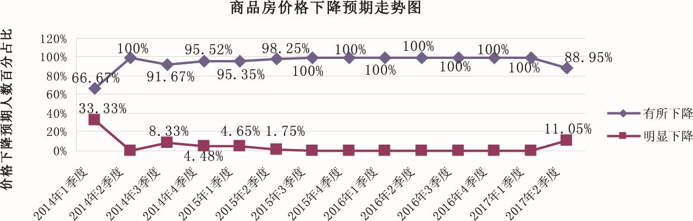

2017年二季度居民消费价格预期调查报告
参加2017年二季度居民消费价格预期调查的专家331人，收回有效问卷331份。与上期大部分人预计居民消费价格总水平和主副食品价格上涨相比，二季度以稳中缓升的预期为主，与去年同期预期走势一致，但看平预期大幅高于去年同期。二季度商品房总体价格继续保持稳中缓升的预期，全省房地产市场“因城施策”效应显现，南京、苏州等热点城市商品房价格趋于稳定；省内其他大部分城市商品房价格以缓涨为主，但明显上涨预期有所上升，房地产市场趋于活跃，部分涨幅较大、上涨较快的城市已启动价格备案管理。
一、居民消费价格总水平上涨预期回落，以稳中缓升为主
与一季度相比，预计二季度居民消费价格总水平上涨179人，占比54.08%，其中预计缓和上涨162人，明显上涨17人，分别占90.5%、9.5%；预计基本持平124人，占比37.46%；预计有所下降27人，占比8.16%；不能确定1人，占比0.3%；无人预计明显下降。
调查结果显示，预计居民消费价格总水平上涨的人数减少至接近半数，其中预计缓和上涨的人数达九成；近四成的人预计基本持平。大多数人预计二季度居民消费价格总水平稳中缓升。
从居民消费价格总水平预期走势看，二季度 (本期)居民消费价格总水平预期和往年同期走势一致，上涨预期较上期迅速下降，比上期的85.98%减少了31.9个百分点；和去年同期的66.41%相比，本期上涨预期减少12.33个百分点。
与上期12.15%的人预计居民消费价格总水平基本持平相比，本期迅速回升，增加25.31个百分点；与去年同期的22.65%相比，本期增加14.81个百分点。
与上期1.56%的人预计居民消费价格总水平下降相比，本期增加6.6个百分点；与去年同期的10.94%相比，本期减少2.78个百分点。
调查表明，与上期大部分的人预计居民消费价格总水平上涨相比，本期居民消费价格总水平以稳中缓升预期为主，与去年同期一致，但看平预期较去年同期大幅上升。
二、主副食品价格上涨预期大幅回落，以稳中缓升为主
与一季度相比，预计二季度主副食品价格上涨132人，占比39.88%，其中预计缓和上涨121人，明显上涨11人，分别占91.68%、8.32%；预计基本持平158人，占比47.73%；预计有所下降38人，占比11.48%；预计明显下降3人，占比0.91%。
调查结果显示，预计主副食品价格上涨的人数降至四成，其中预计缓和上涨的人数约九成；近五成的人预计主副食品价格平稳，高于预计价格上涨的人数。大部分的人预计主副食品价格稳中缓升，并以平稳为主。
从主副食品价格预期走势看，与上期86.29%的人预计主副食品价格上涨相比，本期大幅下降，减少46.41个百分点；与去年同期的61.33%相比，本期减少21.45个百分点。
与上期10.91%的人预计主副食品价格基本持平相比，本期迅速上升，增加36.82个百分点；与去年同期的21.48%相比，本期增加26.25个百分点。
与上期2.18%的人预计主副食品价格下降相比，本期增加10.21个百分点；与去年同期的17.19%相比，本期减少4.8个百分点。
调查表明，与上期大部分的人预计主副食品价格上涨相比，本期主副食品价格以稳中缓升预期为主，与去年同期一致，但其中看平的预期较去年同期大幅上升。
关于大米、食用油和猪肉价格预期情况。国家二月份首次降低今年稻谷收购价格，这对粮油肉的价格预期均会带来不同程度的影响。本期预计大米价格缓和上涨66人，占比19.94%；基本持平254人，占比76.74%；有所下降9人，占比2.72%；无人预计明显上涨和明显下降。预计食用油价格上涨70人，占比21.15%，其中缓和上涨65人，明显上涨5人，分别占92.86%、7.14%；基本持平235人，占比71%；有所下降24人，占比7.25%；不能确定2人，占比0.6%；无人预计明显下降。预计猪肉价格上涨113人，占比34.14%，其中缓和上涨99人，明显上涨14人，分别占87.61%、12.39%；基本持平142人，占比42.9%；下降74人，占比22.35%，其中有所下降72人，明显下降2人，分别占97.32%、2.68%；不能确定2人，占比0.6%。
调查结果显示：本期大米和食用油价格继续以平稳预期为主，均超过七成，较上期增加约20个百分点；价格上涨预期均较上期大幅回落。与去年同期相比，大米和食用油价格预期变化不大。与上期及去年同期的大部分人预计猪肉价格上涨相比，本期猪肉价格上涨预期大幅回落，看平预期大幅上升，大部分人预计猪肉价格稳中缓升。


三、商品房总体价格继续呈稳中缓升，全省房地产市场价格基本保持稳定
与一季度相比，预计二季度商品房总体价格上涨219人，占比66.17%，其中预计缓和上涨163人，明显上涨56人，分别占74.43%、25.57%；预计总体价格基本持平92人，占比27.8%；预计总体价格有所下降16人，占比4.83%；预计总体价格明显下降2人，占比0.6%；不能确定2人，占比0.6%。大部分人预计二季度商品房总体价格稳中缓升。
从商品房价格预期走势看，本期商品房总体价格上涨预期有所上升，较上期的56.38%增加9.79个百分点；与去年同期79.3%的高位占比相比，本期上涨预期减少13.13个百分点。
与上期29.6%的人预计商品房价格保持平稳相比，本期变化不大，略降1.8个百分点；与去年同期的16.8%相比，本期增加11个百分点。
与上期11.53%的人预计商品房价格下降相比，本期减少6.1个百分点；与去年同期的1.95%相比，本期增加3.48个百分点。
调查表明，与去年同期大部分的人预计商品房价格上涨相比，本期商品房价格预期以稳中缓升为主，与上期价格预期一致。
关于全省各地的商品房价格预期情况。三个热点城市，南京预计二季度商品房价格上涨人数占比59.46%，其中缓和上涨77.28%，明显上涨22.72%；基本持平37.84%；有所下降2.7%；无人预计明显下降，绝大部分的人预计南京二季度商品房价格稳中有升，并以缓涨为主。无锡预计二季度商品房价格缓和上涨33.33%，基本持平40%，有所下降26.67%，无人预计明显上涨和明显下降，超过七成的人预计无锡二季度商品房价格稳中缓升，并以平稳为主。苏州预计二季度商品房价格上涨30.44%，其中缓和上涨85.71%，明显上涨14.29%；基本持平56.52%；有所下降13.04%；无人预计明显下降，近九成的人预计苏州二季度商品房价格稳中有升，并以平稳为主。省内其他城市中，镇江地属南京都市圈，但又不受南京住房限贷、限购政策影响，其商品房价格预期由一季度的缓和上涨为主，到二季度以明显上涨为主；南通和淮安两市商品房价格预期以稳中缓升为主；其余城市均以缓和上涨为主。
从调查情况看，我省房地产市场因城施策、分类调控效果显现，热点城市商品房价格过快上涨势头得到有效遏制，呈现平稳运行态势，其他城市以缓涨为主要趋势，其中价格明显上涨预期虽占比少数，但较上期均有所增加，三四线城市房地产市场趋于活跃，部分商品房价格涨幅较大、上涨较快的城市已启动价格备案管理。个别城市土地供应趋紧，拍卖地价大幅上涨现象应引起地方政府重视。


江苏省物价局-江苏省物价局网站
二○一七年四月